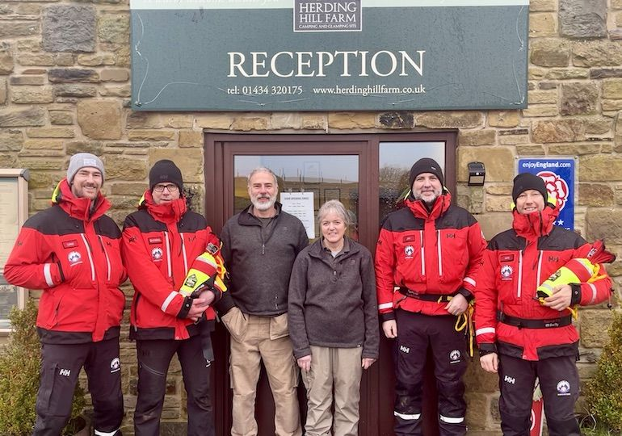

Herding Hill partners with North Tyne Mountain Rescue
Our North East glamping site has marked its long-standing support for a local mountain rescue team by hosting a special event for its members.
Herding Hill Farm, near Haltwhistle, which has donated more than £1,600 to the North of Tyne Mountain Rescue over the past three years, welcomed more than 20 team members to its site for the weekend.

Site managers, Sue and Phil Humphreys, provided food and overnight accommodation for the team, which had been taking part in a night-time navigation challenge at nearby Walltown Crags on Hadrian’s Wall.
Sue said: “Many of our guests are keen walkers and enjoy making the most of our location near Hadrian’s Wall so it’s important to us that we support charities which are close to their hearts. The North of Tyne Mountain Rescue Team does an amazing job and we want to do everything we can to support the essential search and rescue service which they provide for our region.”
Herding Hill Farm holds two annual charity weekends at Easter and on Bonfire Night to raise money for both the North of Tyne Mountain Rescue Team and the Great North Air Ambulance. Guests are invited to take part in a range of activities from crafts to treasure trails in exchange for a donation, with money raised at the events and from collection boxes throughout the year matched by WCF.
Over the years, the donations to North of Tyne Mountain Rescue Team from Herding Hill Farm have been used to buy specific pieces of potentially life-saving equipment including a Starlink RV satellite system which improves communications by enabling the team to quickly establish full internet access even in remote locations, and 12 25-metre throw lines for the team’s new swift water rescue operation, which is due to launch later this year.
Rich Ayre, deputy team leader for the North of Tyne Mountain Rescue Team, said: “As a volunteer-run organisation, we depend on money raised by businesses such as Herding Hill Farm and the general public in order to continue providing our search and rescue services. We are very grateful for their continued support and it’s been great to be able to mark our long association with Herding Hill Farm by spending the weekend here.”
The team stayed overnight at Herding Hill Farm after testing their skills along with other search and rescue services including the Northumberland National Park Mountain Rescue Team, Sunderland Coastguard Rescue Team, and South Shields Volunteer Life Brigade, on the annual night-time navigation challenge.
North of Tyne Mountain Rescue Team operates across Northumberland and Tyne and Wear. The team is run and staffed by volunteers, and relies on donations to meet its £40,000 a year operational costs.
Press Links
- North East glamping site cements relationship with mountain rescue team
- Herding Hill Farm in Northumberland supports mountain rescue team after Hadrian's Wall challenge
- North East Business Life: community, award and charity events of the week
- North East glamping site marks support for Mountain Rescue team
- Glamping site donates to North of Tyne Mountain Rescue Team
< Previous Article
Pet lunch box collaboration between WCF Pet & Equestrian and our 5-star campsites